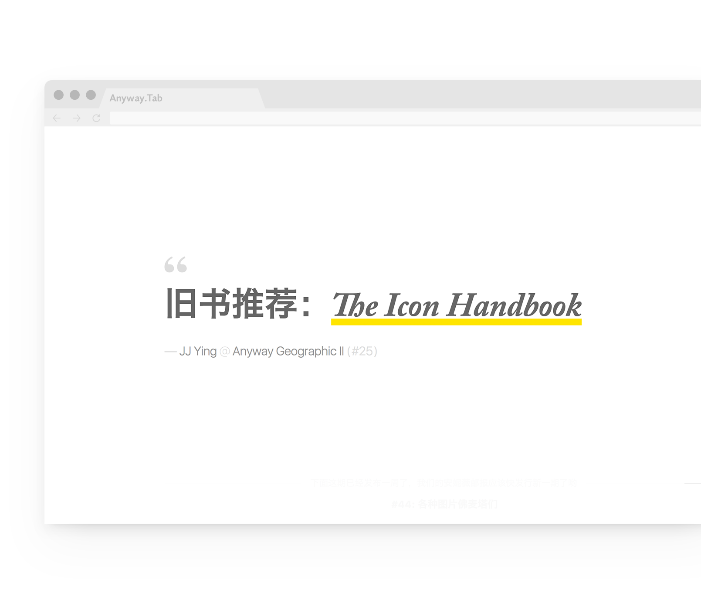
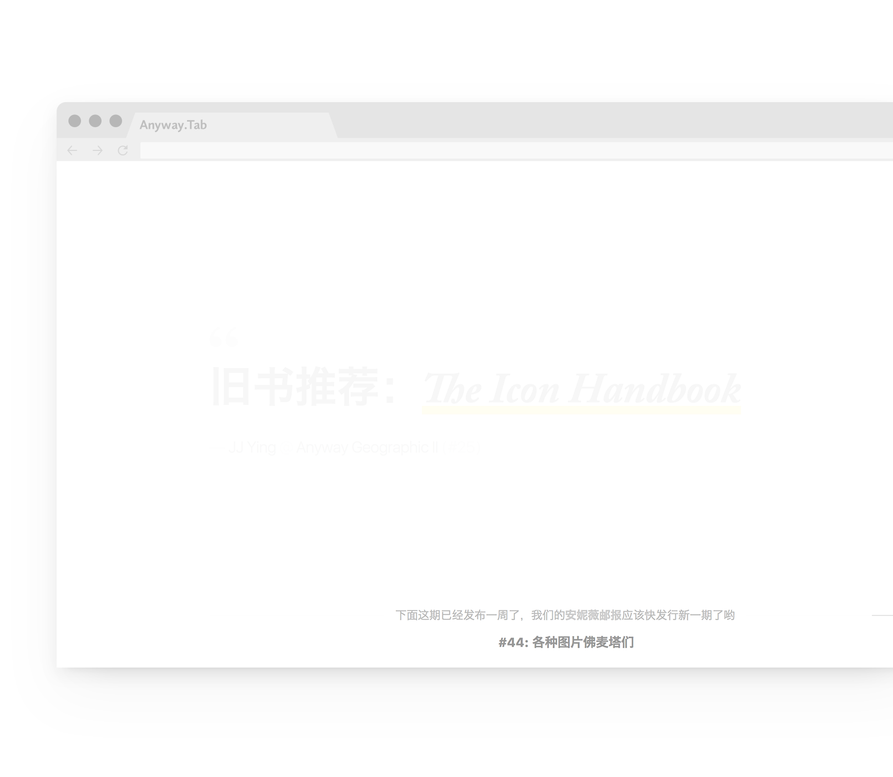

Anyway.Tab
是一款
Chrome
浏览器插件
不想看废话的可直接去
Chrome
应用商店下载
由设计杂谈播客
Anyway.FM
出品
点此查看
订阅方式
Anyway.Tab
有且仅有
2
个功能
1
在新建
Tab
中
回顾过往播客的内容
（以及一些玩笑）

2
播客节目更新提示

有两种安装方式
取决于你是不是打开了科学上网工具
如果能科学上网，
去
Chrome
商店安装
否则，
请先下载
然后本地安装
1.
按一下
Chrome
地址栏右侧的「
三个点点
」按钮
2.
选择「
更多工具
」里的「
扩展程序
」
3.
勾选右上角的「
开发者模式
」
4.
把下载回来的
CRX
文件
拖入这个窗口
常见问题
FAQ
为神马这个页面的风格和你们的其他网站又是不一样的？
我！乐！意！
支持哪些平台？
Windows
和
macOS
均可
有
BUG，怎么联系你们？
可以去
GitHub
上提
issue
或者直接发信
给我们
如何卸载
Anyway.Tab？
点击菜单里的「更多工具」→「扩展程序」找到本插件并删除